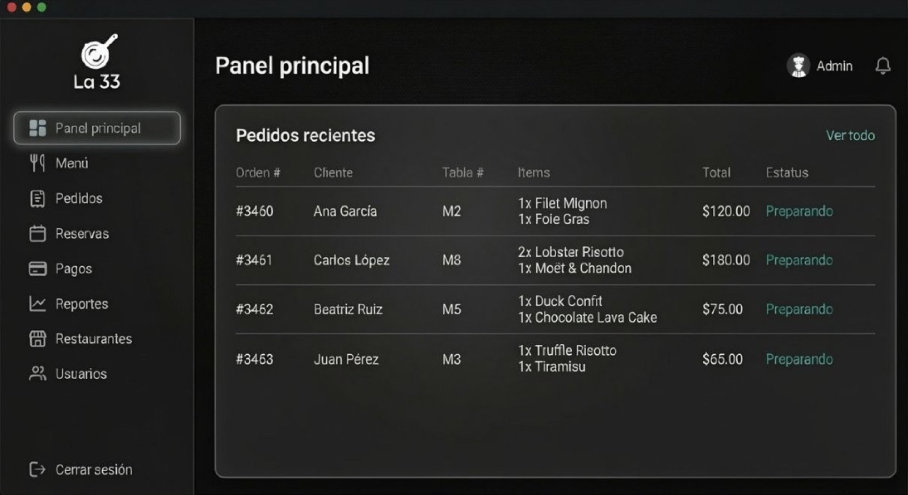
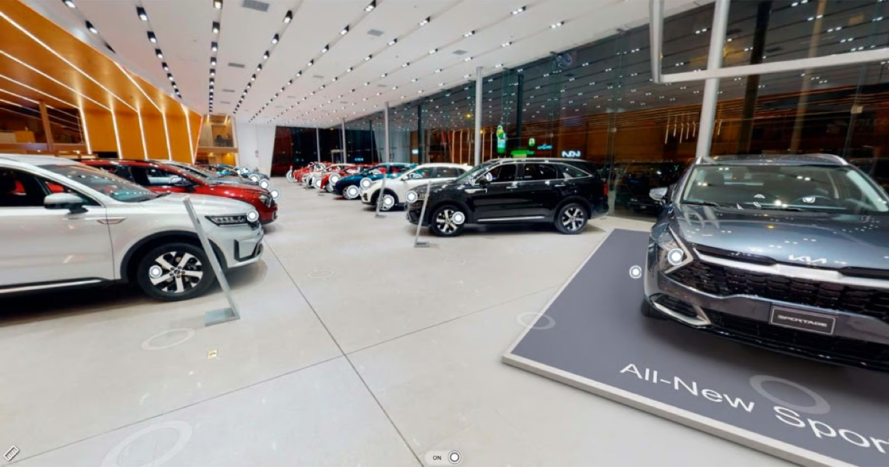
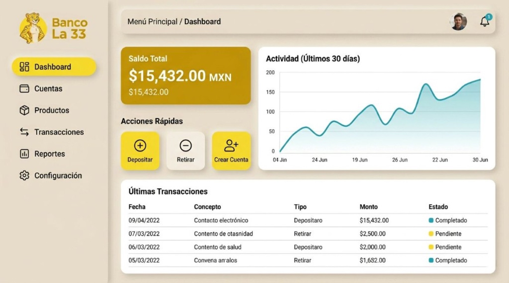
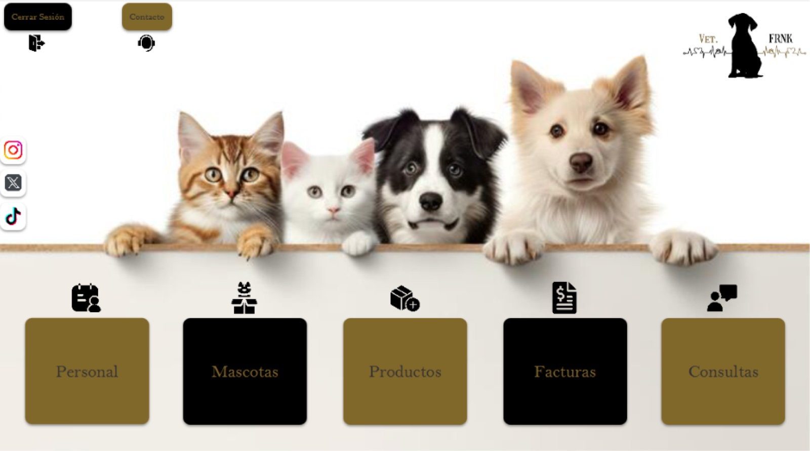
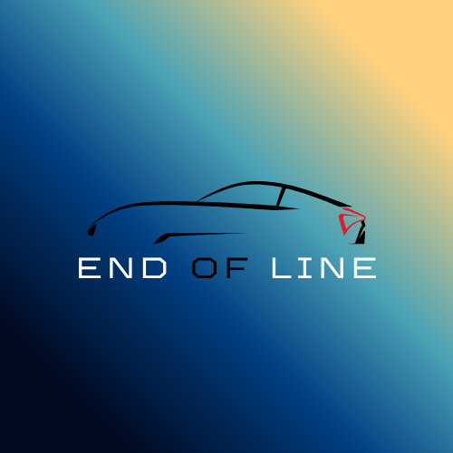
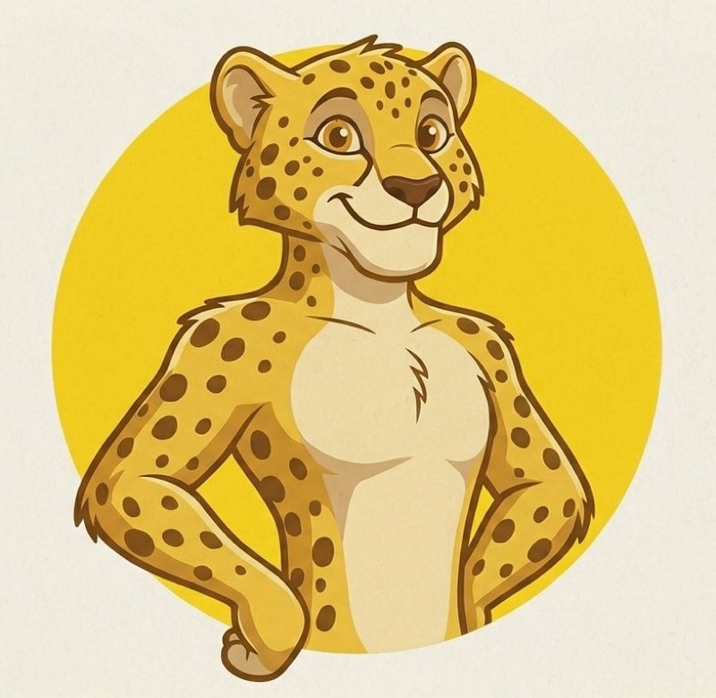
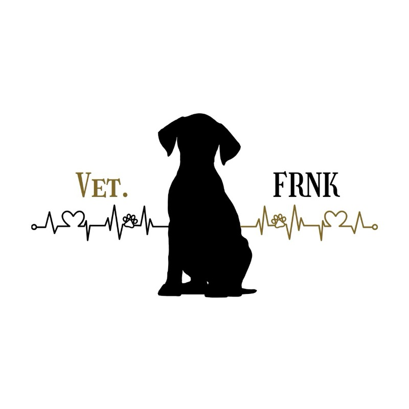

HTML
90%
Desarrollador web · Guatemala City
Francisco
Milian
Descansa al final, no a mitad del camino.
Sobre mí
Desarrollador web
Mi apodo es Frank. Soy de Guatemala: ambicioso, observador y obsesivo con terminar bien lo que empiezo.
Aspiro a llegar lo más lejos posible en tecnología. Me formo en Informática en Kinal y construyo sistemas reales: desde apps de escritorio hasta plataformas web con microservicios, autenticación y bases de datos.
Mi meta es seguir creciendo como desarrollador, entregar productos sólidos y demostrar con proyectos lo que soy capaz de construir.
Stack
Habilidades
Nivel aproximado con las herramientas que uso en mis proyectos.
CSS
85%
JavaScript
70%
React
60%
Node.js / Express
65%
Java / JavaFX
70%
.NET / C#
55%
PostgreSQL / MongoDB
60%
Curriculum
Educación y experiencia
Informática — Kinal
Carrera técnica enfocada en desarrollo de software, bases de datos y construcción de proyectos reales.
Diplomas Cisco
Formación complementaria en redes y fundamentos tecnológicos con certificación Cisco.
3 años desarrollando
Desarrollo continuo de aplicaciones web, APIs y sistemas de escritorio en contextos académicos y de proyecto.
+5 proyectos escolares importantes
Sistemas de restaurante, banca, opiniones, concesionario y veterinaria — con frontend, backend y bases de datos.
Galería
Vistas de proyectos
Una mirada rápida a interfaces y atmósfera visual de mi trabajo.




Portafolio
Proyectos
Proyectos finalizados con descarga del código fuente.
Brasa 33
Sistema de gestión de restaurantes con arquitectura de microservicios: autenticación, menús, pedidos, pagos, reservaciones, inventario y reportes.
Aprendí: microservicios, JWT, React + Vite, APIs REST y PostgreSQL.
Descargar ZIP
EndOfLine
Plataforma web para concesionario y taller: clientes, empleados, inventario, facturación, membresías, contratos y carrito de compras.
Aprendí: Java web, JSP, MVC y flujos de negocio con interfaz completa.
Descargar ZIPGestor de Opiniones
Sistema tipo red social para publicaciones y comentarios, con registro, login JWT, edición de perfil y control de permisos por autor.
Aprendí: separar auth, publicaciones y comentarios en microservicios.
Descargar ZIP
Sistema Bancario La 33
Banca académica con cuentas, depósitos, retiros, transferencias, notificaciones, reportes y panel administrativo por roles.
Aprendí: roles JWT, MongoDB + PostgreSQL y comunicación entre servicios.
Descargar ZIP
Veterinaria FRNK
Aplicación de escritorio para clínica veterinaria: mascotas, citas, consultas, facturas, medicamentos, vacunas, empleados y adopciones.
Aprendí: JavaFX, FXML y organización de módulos CRUD por dominio.
Descargar ZIPConexión
¿Trabajamos juntos?
Escríbeme para proyectos, prácticas o colaboraciones, o conéctate por mis perfiles profesionales.